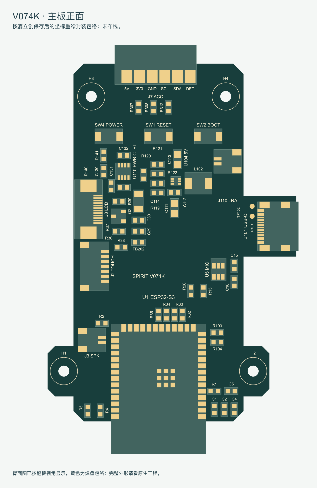
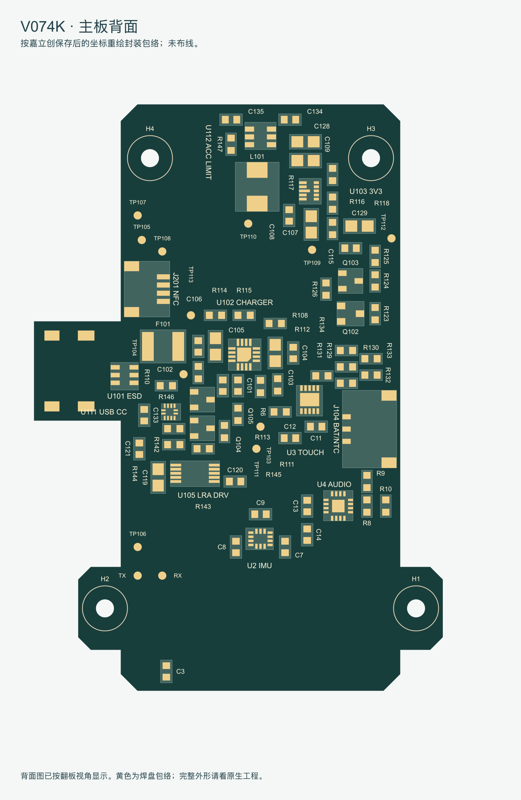

129
主板元件（128 实装，C114 不贴）
457 焊盘 + 15 测试点
0.209 mm
同面器件包络最小间距
同时检查跨面通孔和插接区域
0 / 0 / 0
走线 / 过孔 / 铺铜
按此前要求保留布局评审状态
这次修了什么
| 项目 | 修改后的状态 |
|---|
| USB 串联电阻 | R103/R104 移到 ESP32-S3 端。与 MCU 对应焊盘直线距离约 2.31/2.32mm，原来约26–27mm。 |
| 充电输入电容 | C101/C102 与 BQ24075 放在同一面，距离 IN 约 1.60/2.44mm；原来跨面约9–10mm。 |
| 电源局部布局 | 重排充电区、3.3V反馈、5V电感与输出电容；L102 的 SW 焊盘朝向 U104。收紧触摸、麦克风和 LRA 去耦位置，并扩大偏小的装配间隙。 |
| USB 500mA限制 | 增加 U111 的 Type-C Rp 电流识别和两级 MOS 逻辑。默认电源维持 USB500；识别到1.5A/3A供电能力时，切到 BQ24075 外部 ILIM 档，约1.1–1.47A。关机回到USB500。 |
| J7 配件供电 | 5V 增加 U112 过流保护，49.9k 设定典型约520mA；适配板首版软件预算≤400mA。3.3V仅供逻辑，≤50mA。 |
| 布局约束 | ESP32-S3仍在正面最下端、天线向下；三键仍在正面上部；NFC仍在背面；屏幕 FPC 左侧朝外。J3向内微移0.5mm释放插头空间。 |
上述距离为焊盘中心直线距离，不是已完成的走线长度。新增 U111 用于读取 USB-C 允许电流，BQ24075 仍负责充电和 USB/电池电源路径；没有恢复 U107 电源转换芯片，也没有增加 GPIO 扩展器。
正面

按保存后的原生坐标重绘，黄色为焊盘包络。点击放大。
背面

已按翻板视角显示。完整封装细节以嘉立创工程为准。
仍需在布线和样机阶段闭合
实际 GC9A01 屏幕的 FPC 针序、接触面、背光参数仍未知，因此没有猜改 R39 或宣布屏幕已完全兼容。USB 数据线需按最终4层叠层确定90Ω差分参数；电源主干按电流核算，不能把默认细线宽用于整段电源走线。
本版没有实现 USB 枚举/挂起对应的100mA动态档，也没有PD协商。电池低电量、峰值音量、长灯带和充电同时工作时的电压与温升仍需实测。